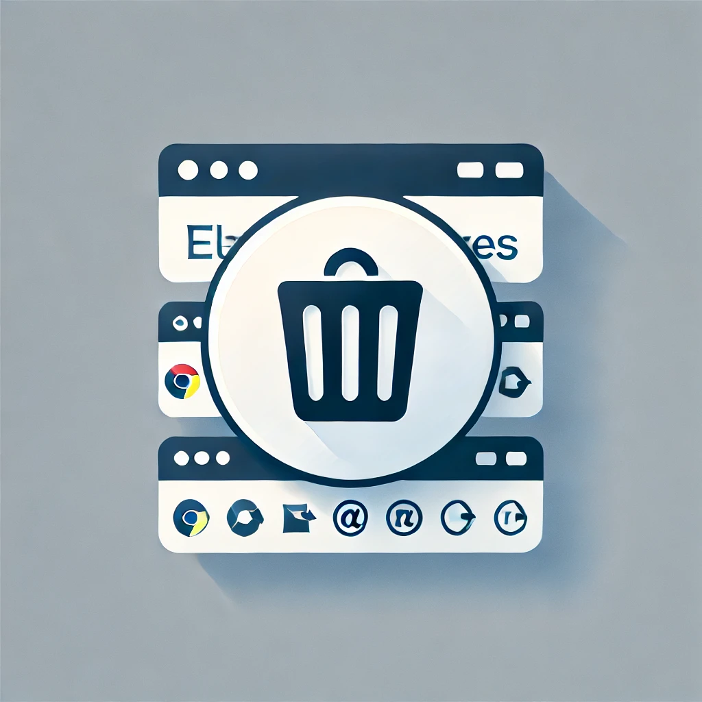

Web Geçmişi Temizleyici
+18
Ana Menü
Filtreler
Filtre:
Filtreyi Kaydet
Geçmişi Temizle
Yüklenmiş Filtreler:
Filtreleri Yükle
Filtrelerle Geçmişi Temizle
**Not:** Bu uzantı, yalnızca yüklendikten sonraki geçmiş öğelerine erişebilir.
Yapımcı: MonkeyDNika
İletişim:
Discord - MonkeyDNika